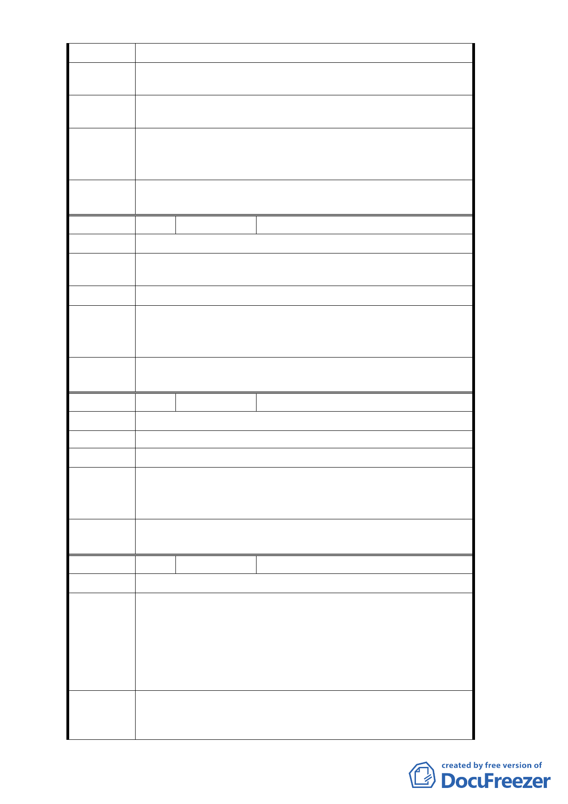

陳情位置 萬華區南寧路 28 巷 1 號
陳情理由
土地變更商業區，要求容積率及建蔽率按商業區法規辦理
。
建議辦法
我們本來是商業區，建愛國西路橋時被改為住宅區，現只
是要求恢復原狀。
都市發展
局建議處 同編號2
理意見
委
決
員
會
議
同意依都市發展局建議處理意見辦理。
編 號 10 陳情人 倪達清
陳情位置 萬華區南寧路 24 巷 6 號
陳情理由
土地變更商業區，要求容積率及建蔽率提高，要按商業區
法規辦理。
建議辦法 提高容積率及建蔽率。
都市發展
局建議處 同編號2
理意見
委
決
員
會
議
同意依都市發展局建議處理意見辦理。
編 號 11
陳情人 陳聰欽
陳情位置 萬華區南寧路 22 巷 6 號
陳情理由 －
建議辦法 土地變更為商業區，提高容積率及建蔽率。
都市發展
局建議處 同編號2
理意見
委
決
員
會
議
同意依都市發展局建議處理意見辦理。
編 號 12 陳情人 徐瑞麒（102.1.27）
陳情位置 中正區中華路二段 101 號
中華路二段兩側住宅區大多數為屋齡三十年的老舊
公寓，為舊法規及實施容積管制前建築。當時的法規結構
陳情理由
要求低，其結構已經不足以因應目前天災的規模，極需要
改建以因應目前天災的規模。惟依照當前實施容積管制住
宅區的容積率過低，改建後將無法滿足原居住面積，以至
遲遲無法改建。
欣聞『變更台北市中華路二段兩側住宅區為商業區主
建議辦法 要計劃案』，建議本變更案直接變更為第二種商業區同時
將容積率提升為第二種商業區的容積率。以利老舊公寓的
- 23 -